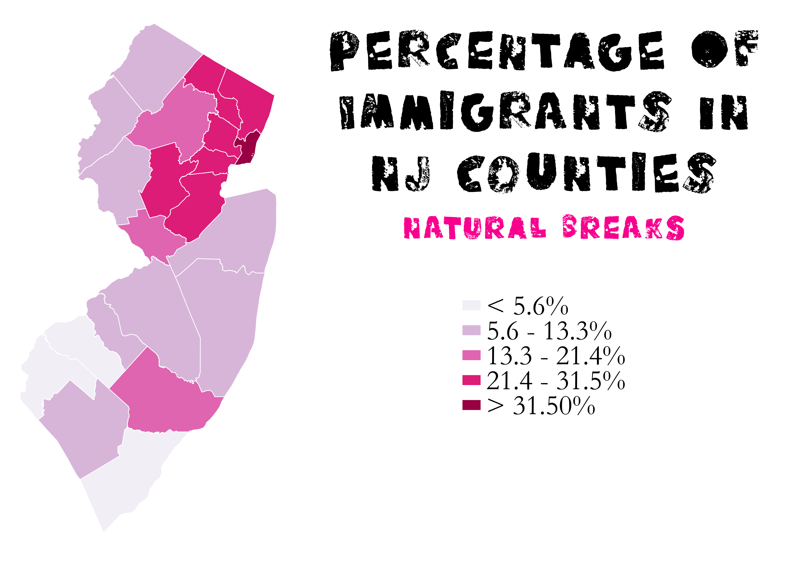
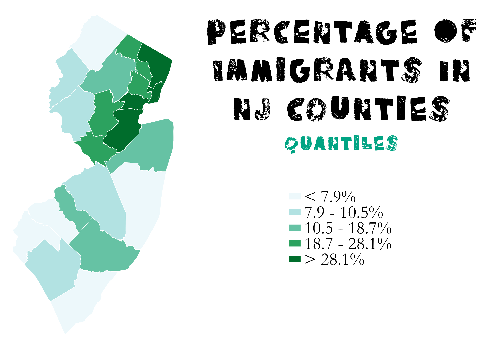
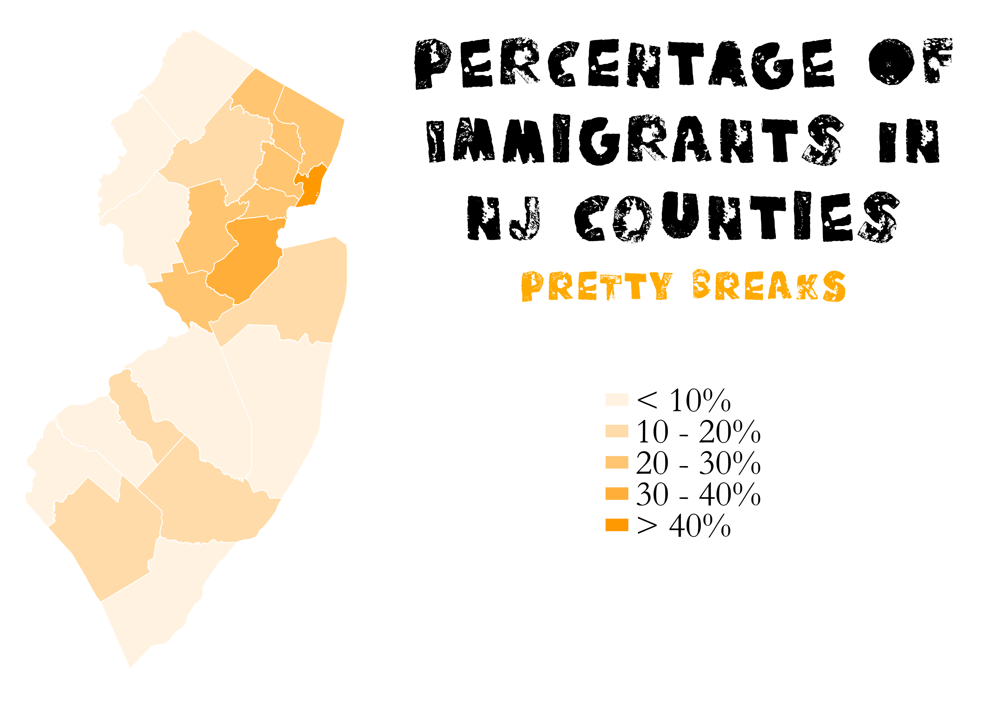

Homework 8: Census Data Ratio Choropleths
Heidi Hannoush
The following maps are choropleths of the percentage of immigrants in NJ counties. I chose this ratio because I am interested in how concentrations of immigrant populations change with distance from cities. Using the percentage of immigrants in each county instead of the real number allows each county to be analyzed independent of population.
This first choropleth uses natural breaks to show the percentage of immigrants in each NJ county. It shows an accurate representation of immigrant distribution. However, if there was not significant variation within this dataset, natural breaks would not work ideally as it would be more difficult to find data points at which to create an accurate break.

This second choropleth uses quantiles to show the percentage of immigrants in each NJ county. Each classification is represented equally, which is good for showing an equal distribution on the map. Unfortunately, the variation is lost above the highest quantile, 28.1%, which is misleading for this dataset which as a lot of variation above 28.1%. A map may also lose such distinctness in the lower quantile as well, though this map does not.

This third choropleth uses pretty breaks to show the percentage of immigrants in each NJ county. The legend is easy to read and the classifications are in equal incredments, i.e. each new color shows an increase of 10%. The map does a good job of giving a general impression of where the larger percentages of immigrants live, or in other words areas of over and under representation. Unfortunately, this makes the map mostly the same color.

Data used for this project
CSV dataset
Link to shapefile
Thanks for stopping by!